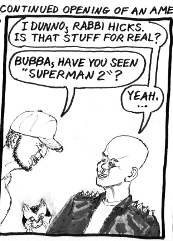
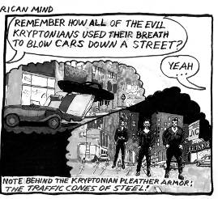
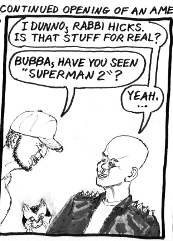
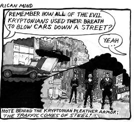
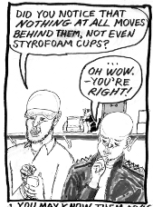
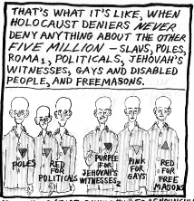
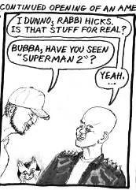
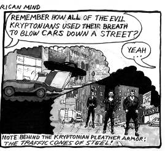
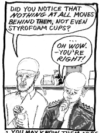
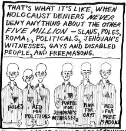

September 14, 2009
Vs Antisemitism, part 2
 


Rabbi Hicks talks with Bubba Matsumoto: the continued opening of an American mind.


Rabbi Hicks talks with Bubba Matsumoto: the continued opening of an American mind.